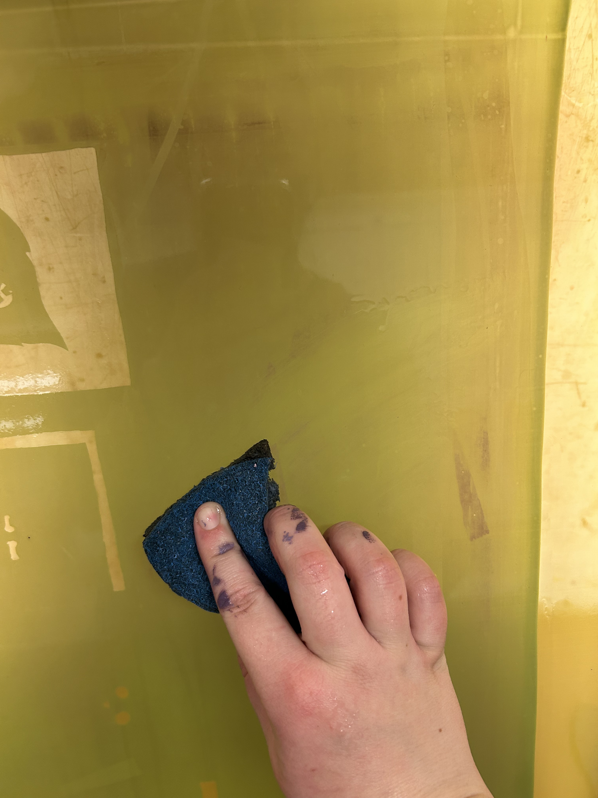
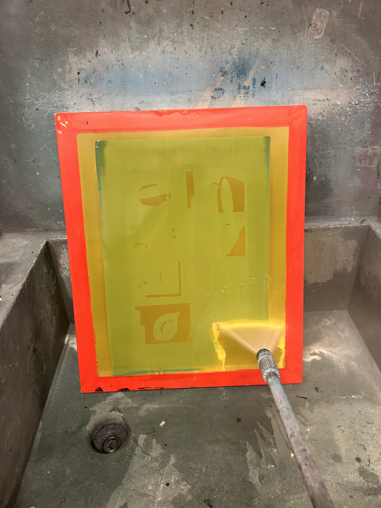

Pour photo emulsion into the scoop coater. Put your screen up against the cabinet wedged underneath the screw. There are two of these, one on the floor and one on the counter, use whichever height is most convenient for you. The screw will hold your screen in place as you coat it. Apply the edge of the scoop coater to the bottom of your screen at an angle and allow the photo emulsion to flow toward your screen so that the entire length of the scoop coater has photo emulsion in contact with your screen. Firmly press the scoop coater against your screen and quickly pull upwards to get a thin, consistent layer of photo emulsion. This may take a few tries. You do not want any globs of emulsion and you want the most thin layer possible. Thick, inconsistent photo emulsion can make it difficult to shoot your screen later on.
Put your screen into one of the covered racks and zip it up. Photo emulsion is light sensitive so you want it to be stored in the dark until you are ready to shoot your screen. You may want to do this step first, before you do anything else, because you will need to let your screen completely dry before you can go on to the next step. This will take at least two hours. You can leave your screen to dry for a few days, but don't leave it for too long because it will not work if left for a while.
After the photo emulsion is dry, and you have made your transparencies, you can shoot your screen. Take your screen and transparencies over to the vacuum frame. Place your transparency or transparencies down, right side up, on the glass. (If you can fit multiple transparencies on one screen you can shoot them at once. Otherwise, you will have to clean and re-shoot your screen, which I will get into later on.) Place your screen on top of your transparencies screen side down. Make sure to allow a few inches on all sides of the screen. Placing your transparencies close to the edge of the screen will make it extremely difficult to print.
Close the vacuum frame, secure the latches, and then press “A” on the keypad. If it does nothing, press “on” and then press “A”. It will expose your screen to the proper amount of light to harden the photo emulsion. When it is done, it will tell you. You then press “B” and take your screen out.
Once you have shot your screen, quickly move it over to the spray booth. Use the hose to wash out your screen, you will magically see your image appear. Do not use the pressure washer for this step, but feel free to experiment with different settings on the spray nozzle. I typically use shower, flat and jet. Be patient. Hold your screen up to the light to make sure you have thoroughly washed out all of the details in your design. Once you have made sure you have completely washed out the non-hardened photo emulsion, put your screen in front of the fan to dry. This will take about 10 minutes.
See Part 3 for printing instructions.
Once you have finished printing, you will want to quickly clean your screen. Remove the tape and use the hose to wash all of the ink out of your screen. You can also use a sponge to help get stubborn ink out of your screen. Make sure to thoroughly wash your screen. If any ink dries in your screen, it will be there forever, which could affect the quality of future prints. Don't forget to thoroughly wash your squeegee as well.
If you do not plan on printing the image(s) currently shot into your screen again soon, you will want to strip your screen so it can be used again for a new layer or future project.
Find the orange spray bottle of photo emulsion remover, there are usually a couple floating around the sink area. Spray your entire screen, anywhere where there is photo emulsion, front and back. Let this sit for a few minutes. I would recommend 3-5 but not any longer. If your screen dries at this point, the photo emulsion will be permanently hardened into your screen so do not leave your screen unattended at this step. After about 3-5 minutes, bring your screen to the pressure washer station. Wash out the photo emulsion. Hold your screen up to the light to check to make sure you have washed all of the photo emulsion out. If there is some stubborn photo emulsion, repeat this step until it washes out.
Set your screen in front of the fan to dry, clean up the rest of your workspace, and then you're done!